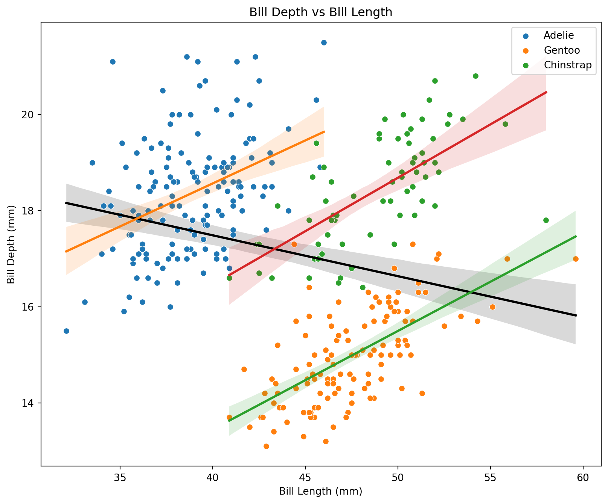
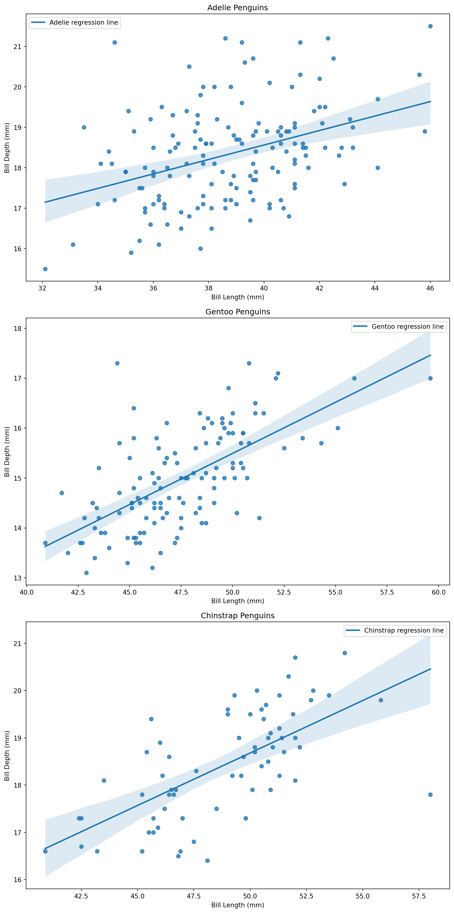

코드
import pandas as pd
import numpy as np
import seaborn as sns
import matplotlib.pyplot as pltThis notebook presents an analysis of a dataset containing measurements of penguins. The goal is to investigate the existence of Simpson’s Paradox in the data.
Simpson’s Paradox is a phenomenon in probability and statistics, in which a trend appears in different groups of data but disappears or reverses when these groups are combined.
Correlation within Adelie species:
bill_length_mm bill_depth_mm
bill_length_mm 1.000000 0.391492
bill_depth_mm 0.391492 1.000000
Correlation within Gentoo species:
bill_length_mm bill_depth_mm
bill_length_mm 1.000000 0.643384
bill_depth_mm 0.643384 1.000000
Correlation within Chinstrap species:
bill_length_mm bill_depth_mm
bill_length_mm 1.000000 0.653536
bill_depth_mm 0.653536 1.000000
# Create a figure and axis
fig, ax = plt.subplots(figsize=(10, 8))
# Overall regression line
sns.regplot(x='bill_length_mm', y='bill_depth_mm', data=df, scatter=False,
line_kws={'color': 'black', 'label': "Overall regression line"})
# Loop through each species
for species in species_list:
species_data = df[df['species'] == species]
sns.scatterplot(x='bill_length_mm', y='bill_depth_mm', data=species_data, label=species)
sns.regplot(x='bill_length_mm', y='bill_depth_mm', data=species_data, scatter=False,
line_kws={'label': f"{species} regression line"})
plt.title('Bill Depth vs Bill Length')
plt.xlabel('Bill Length (mm)')
plt.ylabel('Bill Depth (mm)')
# Add legend
plt.legend()
plt.show()
# Create a figure and axis
fig, axs = plt.subplots(3, 1, figsize=(10, 20))
# Loop through each species
for ax, species in zip(axs, species_list):
species_data = df[df['species'] == species]
sns.regplot(x='bill_length_mm', y='bill_depth_mm', data=species_data, ax=ax,
line_kws={'label': f"{species} regression line"})
ax.set_title(f'{species} Penguins')
ax.set_xlabel('Bill Length (mm)')
ax.set_ylabel('Bill Depth (mm)')
ax.legend()
plt.tight_layout()
plt.show()
---
title: Analysis of Penguin Data
jupyter: python3
---
This notebook presents an analysis of a dataset containing measurements of penguins.
The goal is to investigate the existence of Simpson's Paradox in the data.
Simpson's Paradox is a phenomenon in probability and statistics, in which a trend appears in different groups of data but disappears or reverses when these groups are combined.
## Import Necessary Libraries
```{python}
import pandas as pd
import numpy as np
import seaborn as sns
import matplotlib.pyplot as plt
```
## Load the Dataset
```{python}
# Load the dataset
df = pd.read_csv('data/penguins.csv')
```
## Check Correlations Within Each Species for Culmen Length and Depth
```{python}
# Check correlations within each species for culmen_length_mm and culmen_depth_mm
species_list = df['species'].unique()
for species in species_list:
print(f"Correlation within {species} species:")
print(df[df['species'] == species][['bill_length_mm', 'bill_depth_mm']].corr())
print("\n")
```
## Calculate the Overall Correlation Between Culmen Length and Depth
```{python}
# Calculate the overall correlation between bill_length_mm and bill_depth_mm
overall_corr = df[['bill_length_mm', 'bill_depth_mm']].corr().iloc[0, 1]
overall_corr
```
## Create Scatter Plot
```{python}
# Create a figure and axis
fig, ax = plt.subplots(figsize=(10, 8))
# Overall regression line
sns.regplot(x='bill_length_mm', y='bill_depth_mm', data=df, scatter=False,
line_kws={'color': 'black', 'label': "Overall regression line"})
# Loop through each species
for species in species_list:
species_data = df[df['species'] == species]
sns.scatterplot(x='bill_length_mm', y='bill_depth_mm', data=species_data, label=species)
sns.regplot(x='bill_length_mm', y='bill_depth_mm', data=species_data, scatter=False,
line_kws={'label': f"{species} regression line"})
plt.title('Bill Depth vs Bill Length')
plt.xlabel('Bill Length (mm)')
plt.ylabel('Bill Depth (mm)')
# Add legend
plt.legend()
plt.show()
```
## Create Separate Scatter Plots with Regression Lines for Each Species
```{python}
# Create a figure and axis
fig, axs = plt.subplots(3, 1, figsize=(10, 20))
# Loop through each species
for ax, species in zip(axs, species_list):
species_data = df[df['species'] == species]
sns.regplot(x='bill_length_mm', y='bill_depth_mm', data=species_data, ax=ax,
line_kws={'label': f"{species} regression line"})
ax.set_title(f'{species} Penguins')
ax.set_xlabel('Bill Length (mm)')
ax.set_ylabel('Bill Depth (mm)')
ax.legend()
plt.tight_layout()
plt.show()
```